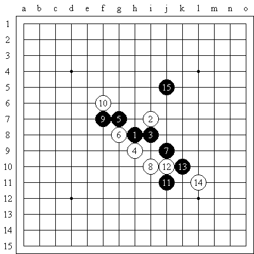

自卖自夸一回，首先这是一个高难度的习题，不是靠着软件可以扫出来的，其次，这一手棋可以代表中国的五子棋技术的达到了一个新的高度，足以让以为五子棋技术不过是“铺地板”的人大跌眼镜。第三，这手棋感动了自己，也感动了花影教主，在明教教主的棋谱中，我再次看到了自己当时的感想，是那么的熟悉，仿佛就在昨天。
现在我们一起来分享当时的喜悦。“我已经忘记花了多少才做出这个题目的。一周还是一个月。还是在一个偶然的一个上午。感觉做出来了之后有些不可思议。连珠是如此美好和简单。”
http://www.pinqi.net/forum/dispbbs.asp?boardID=27&ID=1449&page=2中的15手，
在http://www.pinqi.net/forum/dispbbs.asp?boardID=9&ID=779&page=2或者“杰出连珠”上都可以下载到《云月最强7手变化》
研究最忌投机，妙手只能一时，地毯才是王道。当然铺地毯技术仍有高下之分。
楼上的例子远远无法改变我的看法。楼上发那个贴的时候，已是云月被地毯近1年半。
 楼人的牛人～～
楼人的牛人～～尽情YY吧，哈哈，弄个云月弱防就以为达到了新的高度，幻觉太重了
海天之轮也拿个东西出来秀秀。并不要求你的下的，只要你见过的棋中认为最精彩最绝妙的一手就行。
还不明白我的意思吗？就研究而言棋没有最精彩绝妙的，只有复杂和简单的区别。局面的必胜必败，都是本来就客观存在的，研究只是把这条路找出来而已。地毯搜索攻击点，解决了无数以前无法解决的局面，地毯搜索防守点，发现了无数以前结论的漏洞，在研究中，地毯才是王道。我本来不想回这个贴的，看到你鄙视铺地毯才进来说几句。如果你举个实战的例子倒也罢了，举这种研究中的简单杀来侮辱地毯我实在看不下去。
前几天你们**还问我山岚，山残弱12怎么杀，你们慢慢去妙手吧。里面很多变化在你们看来肯定妙死了，惊喜等着你们。
也不知道楼上说的真的假的。是骡子是马，总要眼见为实。这个你觉得是弱防对吧。
打一个最强变化出来看看，就知道了。你要是喜欢打个地毯出来也可以。
看看多长时间你能够解决。
纯属个观点会抄抄棋谱就这么多理由，有本事随便拿一个出来秀秀。
我看了失落缘这个棋谱之后还是挺佩服的。但不妨碍我的思路，我也接近这个数量级了。海天之轮，你是哪个数量级的？
本来没想跟你争什么，你幻觉重，做高手梦我管不着，是你肆意侮辱地毯我才忍不住说几句。
不客气一下，这种最基本的做棋你都觉得佩服，我还没兴趣跟你比数量级。
再不客气一下，刚才稍微瞄了一下你那个题，至少有4个15可以杀。
下面是刚才别人发给我的某群关于这个帖子的讨论，隐去名字：
路人甲 12:26:09
还不明白我的意思吗？就研究而言棋没有最精彩绝妙的，只有复杂和简单的区别。局面的必胜必败，都是本来就客观存在的，研究只是把这条路找出来而已。地毯搜索攻击点，解决了无数以前无法解决的局面，地毯搜索防守点，发现了无数以前结论的漏洞，在研究中，地毯才是王道。我本来不想回这个贴的，看到你鄙视铺地毯才进来说几句。如果你举个实战的例子倒也罢了，举这种研究中的简单杀来侮辱地毯我实在看不下去。
前几天你们**还问我山岚，山残弱12怎么杀，你们慢慢去妙手吧。里面很多变化在你们看来肯定妙死了，惊喜等着你们。
路人乙 12:26:33
路人甲是作者？
路人甲 12:26:41
不是我啊
路人甲 12:26:49
倒..我刚看到..
路人甲 12:28:54
不认识..是谁哈...这帖子回的太搞了
路人丙 12:29:11
哪的贴?
路人乙 12:29:25
爱五子棋
路人丙 12:29:29
讲的很有道理
路人甲 12:29:30
ShowPost.asp?ThreadID=2053
路人丁 12:29:37
我也觉得很有道理
路人丙 12:36:42
我觉得花月第三手最精彩最绝妙
路人甲 12:37:27
充分体现黑棋的攻击意识..
路人丁 12:41:07
所以叫花月妙手
路人丙 12:56:52
我地毯找一下新绿的15
路人乙 12:57:30
哪个变化？
路人丙 13:00:42
是不是这样地毯?
路人丙 13:06:11
快铺完了
路人甲 13:10:14
这个要是实战都懒的算直接飞9下三格
路人丙 13:11:19
那个漫长把,不如上边来的快些
路人丙 13:13:29
杀完了
路人丙 13:14:08
（15-I10的地毯必胜图）
路人甲 13:14:38
这个15也不妙啊.
路人丙 13:15:46
新绿好几个月弄的15,我地毯,没一会就弄完了,看来的确地毯是王道
路人甲 13:15:52
感觉还是飞出去好远的一手才够妙
路人甲 13:16:11
最起码要远离三格以上的才叫绝妙
路人戊 13:16:31
a1秒么？
路人甲 13:16:38
妙..
路人丙 13:17:13
不知道他是哪个15,
路人甲 13:17:17
就这个局面。.白一个破活二都没有.甚至连个眠二都没有...
路人甲 13:17:25
黑随便扔一手白都完蛋
路人丙 13:17:29
反正这个15够杀
路人甲 13:18:19
可惜几个月的研究
路人丙 13:19:10
是啊,不到一个小时
路人丙 13:19:38
我应该算是做研究最菜的那种了
路人丙 13:20:44
这个15左边够杀,和右边连起来,白无防了
路人丙 13:21:49
估计其他15也杀
路人甲 13:22:24
杀肯定能杀..这个估计仔细拆最起码三种杀法..
路人丙 13:43:45
总结谱谁要?
路人丙 13:44:39
放共享了,新绿题目
路人丙同学弄完这个14共用时16分37秒。
看来和我观点一致的不在少数，这样倒显得我在这里纠缠不够厚道了。有些人生活在自己的梦里，打碎他们的梦是残忍的。
江南新绿做的《云月最强7手变化》我下了但一直没敢看，
原因是因为我觉得还是自己先找一段时间自己琢磨一段比较好，这样也算是对原作者的尊重吧。。呵呵
其实我下棋的时候倒经常会觉得自己下的哪手很帅很好怎么的，当然这是在对手没有下之前，当对手下了我通常都会傻的。
五子棋很深，也很容易，看我们对它的态度了！
你好好看看我的感想，我是说连珠是如此的简单和美好。
我是不反对你铺地毯的，看看你用多长时间能够铺完9楼那个图。
哈哈，别人十几分钟地毯完，你就也跑来承认是弱防了。有点骨气好不好？
“我已经忘记花了多少才做出这个题目的。一周还是一个月。”这么简单的东西当然是个人就能想到，挺好奇这一周还是一个月你干吗去了？看来你的确很有兴趣找个黑弱一手白弱一手的局面，然后再找往外跳N格的“妙手”。
建议再找个白连破眠二也没的局面，A1妙手给大家秀秀（路人甲对此句亦有贡献）
我是没兴趣再陪你玩了，免得被别人说不厚道。
棋和牌不同，牌有很多手气的成分，你不知道对手的牌,你也不知道对手会怎样打，是常规打法，是故意设陷阱，还是诈，或者蒙？而下棋的人则始终会选择下最强的一手，不然自己就得输。在我看来，无论是围棋、象棋，都有很多精彩的对局，自然也有很多精彩的手数，绝妙的杀法，这个世人皆知，五子棋也不例外。难道围棋象棋有那么多可以流传的精彩对局，五子棋就没有吗？肯定不是！五子棋当然也有！棋是有输赢的，始终都会分出胜负，就如海天之轮说的“局面的必胜必败，都是本来就客观存在的”。但我觉得，胜和败客观存在，最强手自然也客观存在，绝妙的棋也自然存在！就拿以前争论过的五子棋的终结来讲，或许穷及所有的下法，所有的点，黑胜占百分之六十，白胜的为百分之二十，和棋百分之二十，也都知道了怎样下黑胜，怎样下白胜，那么五子棋还有必要下吗？如此说来，随着科技的发展，象棋围棋也一样能被终结，棋也就失去了根本的意义！我不反对终结这一说法，但即使被终结了，人脑也不可能全都记住。是真正的下棋，就一定会有绝妙的做棋，杀棋。当然，自己认为就好，别人不一定认同。
以上仅是我个人的观点。依然希望五子棋爱好者们能将自己认为很妙的棋发这上面来！
这么几个中文字都看不完，还好意思来问我，后面不就是答案哦，一个偶然的早晨，就弄完了。不需要十几分钟，几秒就够了。
乱投一个，就杀了。没有多少难度，你去问下有我这个云月谱的人。谱上除了这个15有其他点不。
几个月在做什么，自然在弄云月的其他部分了了。如果这个都要弄几个月，云月都打不完了。
发现有的人就是借口很多。。。还想人家说你厚道。
两位也不必为这个争论，我发这个帖子想法很简单，只是想收集一些很好的对局，看看一些很漂亮的杀棋、防守、解禁而已。没必要讲一些大道理。五子棋是美好的，下棋本是娱乐，能开心就好，自己觉得开心就好，管它那么多呢！呵呵。。。
以和为贵嘛！。。。

 是说偶吗？呵呵。。。
是说偶吗？呵呵。。。逆刃说得不错，我向来承认实战可以走出妙手。实战和研究不同，未知局面的“最强”并不是确定的（几个都不能必胜或临场不能算出必胜的点，哪个更强呢？都一样强吗？有定论吗？）。实战中引对手进攻，却步步陷阱，让对手看似有胜机而又理不清头绪，或看似并不强的进攻，却防点N多，能大量消耗对手时间的点，这样的点可能不是“最强”，但却是实战中有效的手段。
我前面唧唧歪歪说那么多，自己都觉得挺无聊的。本来嘛，爱怎么研究就怎么研究，没谁强迫谁，自己高兴就好了。但看到有人幻觉太重，无端攻击其他人的研究方法，还代表了中国五子棋新的高度，TXX的这年头怎么这么容易被人代表（尼摩对此句亦有贡献），忍不住罗嗦几句，不厚道的地方大家见谅

15楼的东西居然还搞这么大地毯，是不是非常有成就感。
原来的棋谱本来就一点问题没有，画蛇添足
跟着无尽MM寒一个~引用：
原文由 江南新绿 发表于 2007-5-8 16:49:11 :这么几个中文字都看不完，还好意思来问我，后面不就是答案哦，一个偶然的早晨，就弄完了。不需要十几分钟，几秒就够了。
乱投一个，就杀了。没有多少难度，你去问下有我这个云月谱的人。谱上除了这个15有其他点不。几个月在做什么，自然在弄云月的其他部分了了。如果这个都要弄几个月，云月都打不完了。
发现有的人就是借口很多。。。还想人家说你厚道。
现在我们一起来分享当时的喜悦。“我已经忘记花了多少才做出这个题目的。一周还是一个月。还是在一个偶然的一个上午。感觉做出来了之后有些不可思议。连珠是如此美好和简单。”
你的原话都在这里，地球人应该都能看明白想表达什么意思，还要我一句句来说？
“自卖自夸一回，首先这是一个高难度的习题，不是靠着软件可以扫出来的”十几分钟就扫出来了（考虑到路人丙同学平时从来不做谱，手比较生可以理解）。
“其次，这一手棋可以代表中国的五子棋技术的达到了一个新的高度，足以让以为五子棋技术不过是“铺地板”的人大跌眼镜。”没人跌眼镜，不知道代表了谁？这里说新的高度，后面又说没什么难度，几秒搞完。看来以前中国五子棋技术的高度在幼儿园水平。
“我已经忘记花了多少才做出这个题目的。一周还是一个月。”这个题目，指啥？做出这个题目，指啥？这个题目指整个云月？做出指找到100套杀？请用人类的方式交流。
引用：
原文由 江南新绿 发表于 2007-5-8 17:04:14 :15楼的东西居然还搞这么大地毯，是不是非常有成就感。
原来的棋谱本来就一点问题没有，画蛇添足
哈哈，前面说，你地毯呀，有本事地毯呀，给你看看地毯，又说，原来的棋谱一点问题也没有，画蛇添足。
前面说，失落缘这个谱你还是挺佩服的，后面又说，15楼的东西居然还XXXX
思维跳跃得太快了，我有点跟不上。
至于说成就感呢，搞地毯谱还是有不少成就感的，不过云月还轮不到。我地毯完云月的时候，不知道你弱4杀完了没有？时2005年1~2月（限于地毯软件的原因，毛巾谱早在03年完成）。
<TABLE width="90%" border=0><TBODY><TR><TD>
今天路过一个鲜花店，
一个小伙子在买花“老板，什么花最漂亮？”
傍边一个路人走过”没有最漂亮的，只有价格贵的和价格便宜的”
”这种红色的很漂亮，小伙子，你要不要看看”
“在做梦是吧，廉价货也会有人要？”
这时，走过来围观的人。“都很漂亮，你们在争什么？”
“我也不知道自己在说什么，还是走吧”
-------花是不是美，要看有没有会欣赏的人和会欣赏的角度。
五子棋是什么样的规则，开局之后，200多个点都可以下，你可以象空降兵一样，四面出击，但实际的效果呢？有人说像烙大饼，围绕着中心一圈又一圈的在扩大。“铺地板”是另一个形象的比喻，一块地板连接的是傍边的一块地板，之间不留任何的空隙，这样一直到终局。到底规则和实际之间，棋和棋之间距离多远才可以发挥应有的作用？张拟的棋经十三篇里曾经提到，“ 阔不可太疏，密不可太促。” 在阔与密之间，在控制的松与紧之间，什么才是正解？如果没有完全匹配的解释，那么有没有什么特征呢？古代的禅是一个很好的解释。尚未进入禅门的人，禅是不能用语言文字来说明的东西，也无法依靠语言文字的说明来了解它。但语言文字却能引导或指示初学者如何去亲自体验它。因为禅的经验就是“如人饮水，冷暖自知”，要靠自己品味。一楼的图其实是一个很好的启示，它给了我很多灵感。随便再举一个例子，比如说想到了下图的下一手。这样的思维是跳跃性的。没有必然的联系。想到这个图很好，由一楼的图想到别的图，也很好。如果你只是把这个图搬到软件上，真的是用错了地方。从山峰旁边露出的半匹骆驼才是最多的。

五子棋的一个重要特点就是解法的多元化。很多学五子棋的人回避这个问题，以为只要掌握了最强就行了，其他都弱弱弱。是这样吗？我们不妨看看围棋。
------------------------------------------------------------------------------
一个现代的人学习围棋，是从具体，从定式，从常型开始。能
认识围棋的全局观，才会有战略的问题出现。最后，对围棋的战斗和平衡
了解得多了，才能上升到围棋的思想。
我们对围棋的认识水平，在高层次上还远远没有到“规律化”的地步。
这就很叫人想起在不久前听中国象棋大师胡荣华说过，照目前棋手对棋的
共识来看，象棋和国际象棋的共识大概有85%，而围棋却还在65%以下。其
他围棋专家在对待围棋的“共识”这一点，还要更谨慎一点。程晓流在听
到胡荣华的这个说法之后说，高手在分析棋局的时候对一手棋表示相同的
观点，大概还不到四成。而王谊五段则说，要低于四成，甚至只有一两成。
他认为只有在基本定式和死活、小官子这样机械的问题上才能有效。如果
在棋局中的大多数时间里已经到了“只此一着”的地步，就不能说有什么
艺术风格了。就如死活题这样的问题，在解题的一方面，就不能说是有什
么个性。而在解死活题等问题上，电脑早就圆满完成了任务。可惜在比赛
中，要出现比较规整的设定的情况是不多的。
----------------------------------------------------------------------------------
在一个超过常规步数的五子棋题目上，即超出你算力的情况下，什么能够指导你走向最优解。这个才是令人关心的问题。如果真的有两个最优解？一切都要从实际出发，空想是不成的。
在云月布局上，存在这样的可能，另一条道路也能通行罗马。赞赏多元化和保护独创性在五子棋传播的过程中尤为重要。地毯棋谱好吗？请记住作出贡献的是电力公司和许多默默无闻的人。
在五子棋大多数博弈当中,根本就不是哪个比哪个更简单这个模式.五子棋的结果只有三个状态,胜,负,和.
所以就谈不上,确界和上确界,也就没有最优解这样的模式.不断努力探索才是五子棋的真谛.在这一点上,下五子棋就像孩子学东西.也许有些人会笑.笑就笑吧.
离开软件 和前人的定式 你去铺垃圾堆吧
我认为以上回帖都已经偏离了楼主的本意，本帖讨论的是棋的艺术魅力而不是棋的研究方法。因此无论这个棋局的前几步是不是走的最强手应该不是最重要的事情，而是在这个局面下的这一绝妙手所汇聚的将五子棋的力量发挥极致，将人类思维的发挥到极致的魅力。
我们为什么要下棋？是为了能从下棋中悟出一些道理，从中感受到快乐。不管是自己想还是通过软件地毯，都是为了更多的发现棋的奥妙，拓展我们的思维，都能够感受到快乐。从这个角度来看，大家的目的都是一样的。
提高棋艺是为了修身养性，是为了以棋会友，大家共勉。
对别人的批评总是那么容易，欲加之罪何患无辞，下棋为了娱乐，开心。请保持点精力，多为自己想想吧。
很简单，刺客对谁不满，那自己拿出来公开，不公开少说，大家的信息不对称，谁有知道何为第一个解决？至于楼上的用词为“我”如果真要计较，怕是逆刃也不敢说是自己，这里离不开大家的帮助，如果真呢么说怕又有人要吵了，下棋为了开心，如果批评是某些人的职业，那我也不多说了~！！！

嘿嘿,女流也来插一脚；我说还是我们的世界冠军“无敌”走出的棋最精彩,一不小心拿了世界第一；大家都靠边站。这话有份量吧；如果实在不行，把爱五子棋网砸了，把有志青年干掉
互相攻击就不好了，欢迎各位老师多发帖子，支持爱五子棋。
做为个爱好者本鞋想表达两句偏见，应该也代表了大多数爱好者的心声：逆刃的谱是具有历史意义；还有江南新绿,我想大多数爱五子棋忠实者都同意,为什么?因为他们发了,让很多五子棋爱好者看到而且学到,不管怎么样,口气狂大也罢,吹牛也行,都是在为奉献,而有的人藏着掖着说大话，大家都没看到你的杰作，你有什么不服气？
如果五子棋都向你这样，前人的定试会留下来吗？你还能学到什么？
吹嘘自己多大本事，不服气等等都没什么，千万别伤了和气；为五子棋贡献出一点微薄之力，能者多劳。
［ 有志青年 于 2008-12-8 12:21:26 时奖励此帖[金币加 20 威望加1］
［ 失落刀 于 2008-12-8 21:45:10 时奖励此帖[金币加 20 威望加1］
［ 失落刀 于 2008-12-8 21:45:56 时奖励此帖[金币加 20 威望加1］